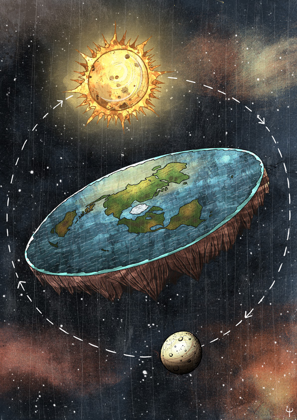
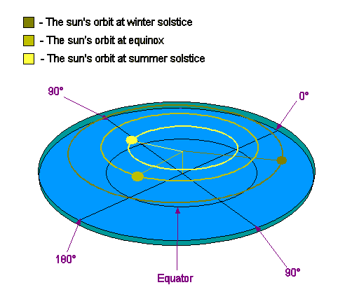
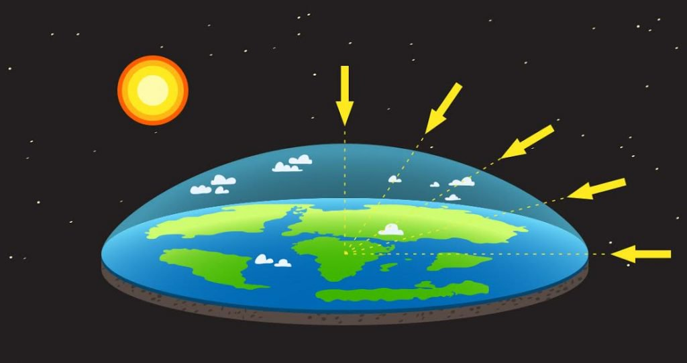
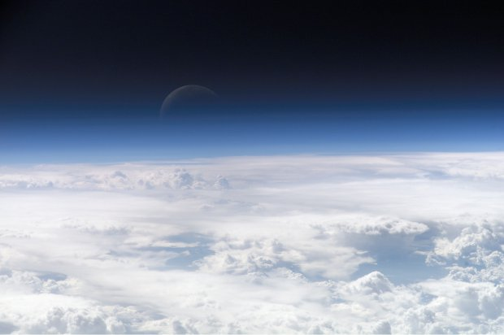

The Flat Earth Society has members from all arround the globe.
This is the home of the world-famous Flat Earth Society, a place for free thinkers and the intellectual exchange of ideas. This website hosts information and serves as an archive for Flat Earth Theory. It also offers an opportunity to discuss this with the Flat Earth community on our forums.
There are three common explanations for this, but in the end without toppling the Planar Conspiracy there is no real way to know.
The radius of the sun's orbit around the Earth's axis symmetry varies throughout the year, being smallest when summer is in the northern annulus and largest when it is summer in the southern annulus. Additionally it also raises and lowers. This causes the effect of the sun appearing to move in a figure eight throughout a year.
The sun simply illuminates only a portion of the earth at a time. This also explains timezones as we can then see the path of the Sun, a circle above the flat earth.
No. Even if the Earth was a globe this would be an impossibility. We have testimonies from several pilots saying that no curvature can be seen at Commercial Airline heights. It has been suggested that airplane windows serve to distort the view of passengers and make them believe they see curvature when indeed there is none. This was likely a ploy by early airline companies to sell more tickets.

Gravity as a theory is false. Objects simply fall.
In the flat earth community there are several theories as to why this happens. Some attempt to explain this with use of mechanics like electromagnetism, density, or pressure. Others make use of traditional mathematics, such as the infinite plane model, and others a new look at the problem - such as the non-euclidean model.
What is certain is sphere earth gravity is not tenable in any way shape or form.